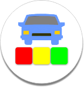

Kamus
Oleh:
Bayuaji A. Pambudi
NIM. 13504241031
Pembimbing:
Muhkamad Wakid, M.Eng.
NIP. 197701717 200212 1 001
Terima kasih telah menggunakan Kamus Pengecatan Otomotif. Tujuan pembuatan aplikasi ini adalah untuk memudahkan pengguna dalam mengenali dan memahami beragam istilah pada pengecatan otomotif. Di dalam kamus ini, terdapat 541 istilah populer dalam pengecatan otomotif.